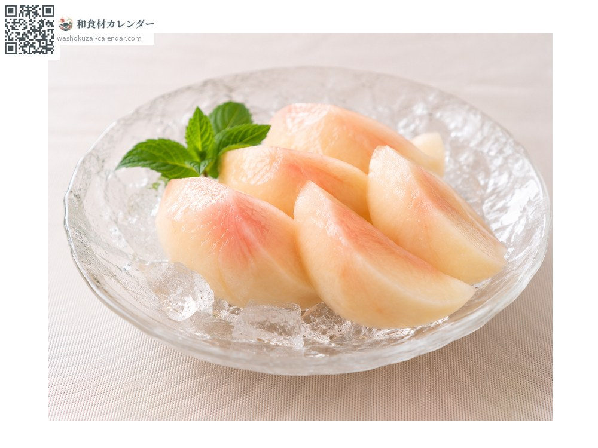
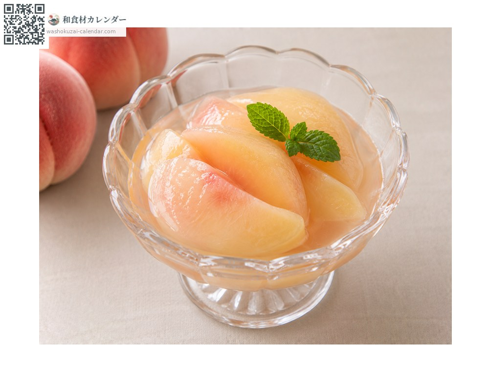
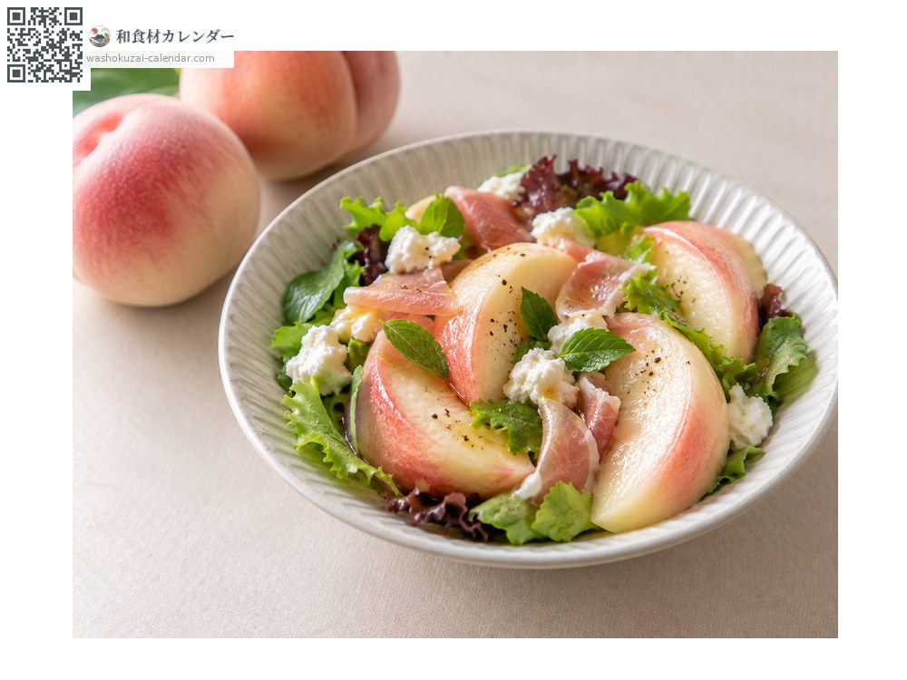
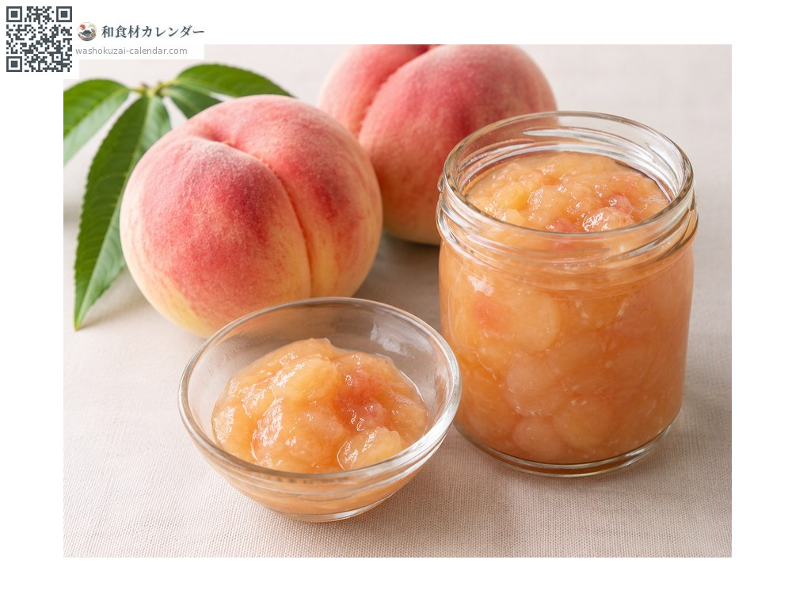

水果
水蜜桃
モモ もも momo
別名momo
當令時期為7月、8月

當令時期
1月
2月
3月
4月
5月
6月
7月
8月
9月
10月
11月
12月
當令有供應
料理方式

直接生食
回到室溫香氣會更明顯。

糖漬水果
以白酒與砂糖燉煮。

沙拉
配生火腿或莫札瑞拉起司。

果醬
熬煮成醬。
挑選方式
整體上色均勻、香氣強。以中央的縫線為界左右對稱。
保存方式
常溫追熟，食用前2至3小時再冰。冰得太冷甜味會下降。
主要產地
小知識
果肉極為柔軟易損傷。不要用手指按壓測試，按過的地方會從那裡開始壞。